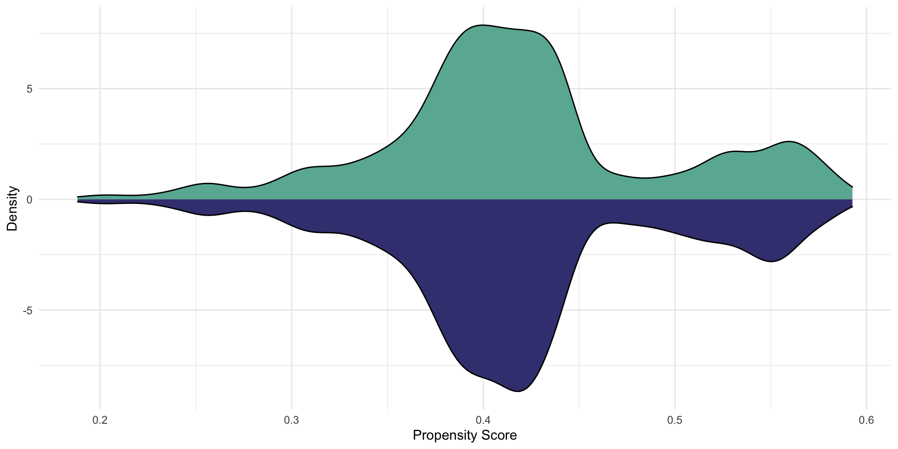

library(dplyr)
library(tidyr)
library(stringr)
library(MatchIt)
library(tableone)
library(data.table)
library(ggplot2)
source('support_functions.R')
# http://insideairbnb.com/get-the-data
msp <- reading_data(url = "http://data.insideairbnb.com/united-states/mn/twin-cities-msa/2022-09-16/data/listings.csv.gz")Taking a Leap of Faith: Association to Causation
Lindsey Dietz, PhD
2022-12-11
Coffee
How many of you drink coffee?
How many of you think it is bad for you?
“The risk of hypertension associated with coffee intake varies according to CYP1A2 genotype. Carriers of slow 1F allele are at increased risk and should thus abstain from coffee, whereas individuals with 1A/1A genotype can safely drink coffee.”
– Journal of Hypertension, August 2009
Coffee
How many of you drink coffee?
How many of you think it is good for you?
“Drinking two to three cups of coffee a day is linked with a longer lifespan and lower risk of cardiovascular disease compared with avoiding coffee.”
– European Journal of Preventive Cardiology, September 2022
Agenda
- Causal Inference Preliminaries
- Matching
- Example using R and Airbnb Data
Association To Causation
- Most of us want to understand more than just association (links, risks, etc.)
- For example,
- Will a new feature lead to increased revenue in my app?
- Does a vaccine prevent the flu?
- Will a regulatory policy change affect bank capital?
Causal Inference
Causal inference is a general set of principles and methods that allow us to make statistical inferences about the causal effects of treatments from randomized and observational data.
Those who can, design experiments!
- Randomized Experiments a.k.a Randomized Controlled Trials (RCTs) or A/B testing are the gold standard for causation.
- However, ethical or logistical reasons may prevent us from using experimentation.
- We cannot force people to do dangerous things.
- If one unit is influenced by another, we cannot parse treatment impacts.
Neyman–Rubin Causal Model
Outside of a randomized experiment, causal inference is a missing data problem. We don’t know the real-world probability of a unit being assigned into a treatment (T) given a set of confounders (X).
Potential Outcomes Framework
Hypothetical outcomes \(Y_t\) are what would be observed if treatment was set to \(T = t\)
– Each unit has potential outcomes \(Y_0, Y_1\) before a treatment decisions is made.
Observed outcome \(Y = Y_t\); counterfactual outcome \(Y = Y_{1-t}\)
– Counterfactual outcome is what would have been observed if the treatment had been different.
Fundamental problem of causal inference: we cannot observe both potential outcomes.

Average Treatment Effect (ATE)
Average of all treatment potential outcomes − Average of all control potential outcomes
\({ATE} = E[Y_{1} − Y_{0}]\)
In general, \(E[Y_{1} − Y_{0}] \ne E[Y|T=1] − E[Y|T=0]\). This is a difference between setting and conditioning (though the notation appears to be identical!)
\(E[Y|T=1]\): mean of Y among people with T = 1
\(E[Y_1]\): mean of Y if the whole population was treated with T = 1

Nothing is free
Outside of a pre-designed randomized experiment, we must make strong and mostly untestable assumptions about the treatment assignment mechanism to go from descriptive inference to causal inference.
(Positivity) Every unit is equally likely to be assigned a treatment: \(P(T = t | X = x) > 0\)
(Ignorability) no unmeasured confounders, i.e. \(Y_0, Y_1 \perp T | X\). Among those with the same confounders, we can think of treatment as being randomly assigned.
(Consistency) Y is observable, i.e. \(Y = Y_t\) if \(T = t\) for all \(t\)
Stable Unit Treatment Value Assumption (SUTVA): potential outcomes for unit i are unaffected by the treatment assignment for unit j
How the assumptions get us to a treatment effect
\(E[Y|T=t, X=x]\) involves only observed data.
\[\begin{align} E[Y|T=t, X=x] =& E[Y_t|T=t, X=x] \text{ by Consistency}\\ =& E[Y_t|X=x] \text{ by Ignorability}\\ \end{align}\]\(E[Y_t] = E[E[Y_t|X=x]]\) by the Law of Total Expectation
Then, \[\begin{align} E[Y_1 - Y_0] =& E[Y_1] - E[Y_0] \\ =& E[E[Y_1|X=x]] - E[E[Y_0|X=x]] \end{align}\]
Outcome for treated − Outcome for untreated = [Outcome for treated − Outcome for treated if not treated] + [Outcome for treated if not treated − Outcome for untreated] = Impact of treatment on treated + selection bias.
Key idea: estimating the counterfactual — a prediction of what would have happened in the absence of the treatment. Neyman-Rubin’s Framework for Causal Inference
Useful Reference for Causal Inference: https://www.pnas.org/doi/epdf/10.1073/pnas.1510479113
Will a new feature lead to increased revenue in my app?
- Treatment: new feature
- Control: current feature
- Experimental Unit: app user
- Measurement/Metric: percent change in revenue per user
- Plausible Confounders: age, gender, time of the year
Will a regulatory policy change affect bank capital?
- Treatment: new policy
- Control: former policy
- Experimental Unit: bank
- Measurement/Metric: percent change in bank capital from policy enactment to set final time
- Plausible Confounders: mix of business, mergers/acquisitions/divestitures, economic environment
From Observational Data to Pseudo-Experiment via Matching
Suppose we are not in control of the treatment mechanism so there are differences in the assignment, i.e. we are in violation of the Ignorability and possibly the Positivity assumption.
We want to match on the full set of covariates, X. Propensity scoring: For unit i, \(\pi_i = P(T=t|X=x_i)\) If a unit has a propensity score of 0.3, they would have a 30% chance of receiving treatment.
If we match on propensity score, we can meet our assumption of ignorability (treatment is randomized given X).
In a randomized experiment, P(T=1|X) = P(T=1) = 0.5. In an observational setting, we don’t know the score, but we can estimate it.
Matching in Practice
P(T=1|X) - we have a binary outcome so we can use methods that are suitable for this such as logistic regression (or machine learning alternatives).
- Fit a propensity score model with outcome T and covariates X.
- Get the predicted propensity score for each unit.
- Perform matching based on an algorithm
Overlap between propensity scores in control and treated: Positivity assumption checking \(P(T = t | X = x) > 0\)
Match on distance- caliper to prevent bad matches
Airbnb Data Example
Will adding heating in Minneapolis-St. Paul Airbnb listings lead to increased revenue per stay?
- Treatment: Heating present
- Control: Heating absent
- Experimental Unit: Listing
- Measurement/Metric: percent change in revenue per user
- Plausible Confounders: number of bedrooms, number of bathrooms, type of listing (Private Room vs. Entire home). Please note there are many many other confounders possible that I’m not including for simplicity.
Additional filters: limiting to listings with 0-5 bedrooms and 1-3 bathrooms to prevent crazy outliers. Also filtering out listings that allow long term stays.
Setting Up R libraries and reading in data
Data Cleaning and Review
top40msp <- top_amenities(data = msp, number = 40)
analysis_set_msp <- create_analysis_set(data = msp,
amenities_vector = top40msp,
test_var = 'Heating',
inactive_date = Sys.Date() - 365,
room_types = c('Entire home/apt', 'Private room'),
standard_baths = 1:3,
standard_beds = 0:5,
review_lower_bound = 0,
min_nights_upper_bound = 7)
tableone::CreateTableOne(data = analysis_set_msp,
strata = 'Heating',
smd = TRUE,
test = FALSE) Stratified by Heating
FALSE TRUE
n 761 1496
price (mean (SD)) 159.74 (127.79) 157.07 (139.58)
beds (mean (SD)) 2.45 (1.30) 2.21 (1.28)
bathroom (mean (SD)) 1.31 (0.54) 1.24 (0.50)
Heating = TRUE (%) 0 ( 0.0) 1496 (100.0)
room_type = Private room (%) 176 (23.1) 426 ( 28.5) Fit a propensity score model and matching based on an algorithm
matched_out <- MatchIt::matchit(Heating ~ beds + bathroom + room_type,
data = analysis_set_msp,
method = 'optimal',
caliper = NULL)
analysis_set_msp <- analysis_set_msp %>%
dplyr::mutate(prop_score = matched_out$model$fitted.values,
weights = matched_out$weights)
analysis_set_msp# A tibble: 2,257 × 7
price beds bathroom Heating room_type prop_score weights
<dbl> <int> <dbl> <lgl> <chr> <dbl> <dbl>
1 58 2 1 TRUE Private room 0.699 0
2 64 2 1 TRUE Private room 0.699 0
3 64 2 1 TRUE Private room 0.699 0
4 75 1 1 TRUE Private room 0.717 0
5 49 3 1 TRUE Private room 0.679 0
6 90 1 1 TRUE Private room 0.717 0
7 105 2 1 TRUE Entire home/apt 0.671 0
8 80 1 1 TRUE Private room 0.717 0
9 357 5 2 TRUE Entire home/apt 0.573 0
10 172 4 1 TRUE Entire home/apt 0.630 0
# … with 2,247 more rowsReview postitivity assumption

# Positivity assumption checking:
# Is there overlap between propensity scores in control and treated?
ggplot2::ggplot(analysis_set_msp, aes(x = prop_score)) +
geom_density(data = analysis_set_msp %>%
filter(Heating == TRUE),
aes(x = prop_score, y = ..density..), fill= "#69b3a2") +
geom_density(data = analysis_set_msp %>%
filter(Heating == FALSE),
aes(x = prop_score, y = -..density..), fill= "#404080") +
theme_minimal() +
xlab('Propensity Score') +
ylab('Density')Review outcome of matching
matched_set_msp <- analysis_set_msp %>%
dplyr::filter(weights == 1) %>%
dplyr::select(-weights, -prop_score)
match_tbl <- tableone::CreateTableOne(vars = c('beds', 'bathroom', 'room_type'),
data = matched_set_msp,
strata = 'Heating',
smd = TRUE,
test = FALSE)
print(match_tbl, smd = TRUE) Stratified by Heating
FALSE TRUE SMD
n 761 761
beds (mean (SD)) 2.45 (1.30) 2.45 (1.30) 0.002
bathroom (mean (SD)) 1.31 (0.54) 1.31 (0.54) 0.002
room_type = Private room (%) 176 (23.1) 173 (22.7) 0.009Complete outcome analysis on matched data
y_trt <- matched_set_msp %>%
dplyr::filter(Heating == TRUE) %>%
dplyr::pull(price)
y_con <- matched_set_msp %>%
dplyr::filter(Heating == FALSE) %>%
dplyr::pull(price)
t.test(y_trt, y_con, paired = TRUE)
Paired t-test
data: y_trt and y_con
t = 1.8688, df = 760, p-value = 0.06203
alternative hypothesis: true mean difference is not equal to 0
95 percent confidence interval:
-0.6705195 27.2565905
sample estimates:
mean difference
13.29304